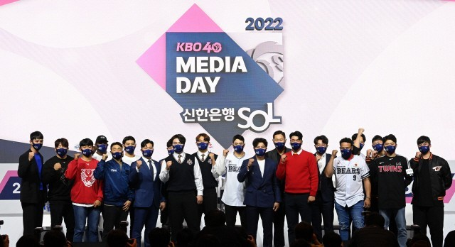

kbo리그는 1982년에 출범한 대한민국의 프로야구 리그. 리그 명칭은 2014년까지 한국야구선수권대회[2]였으나 2015년부터 리그 상표 정체성 통합을 위해 KBO 리그라는 브랜드로 재출범하게 되었다. 주관 단체는 한국야구위원회(KBO). 1982년 프로 스포츠로 탄생한 이래 2023년에 42번째 시즌을 맞는다.
대한민국 프로 스포츠 리그 가운데[3] 가장 역사가 오래되었고, 유일하게 지상파 3사[4]와 산하 스포츠 채널 3사[5] 모두에서 중계하고 있다. 또, 유일하게 여자 리그가 없는 종목이다.
